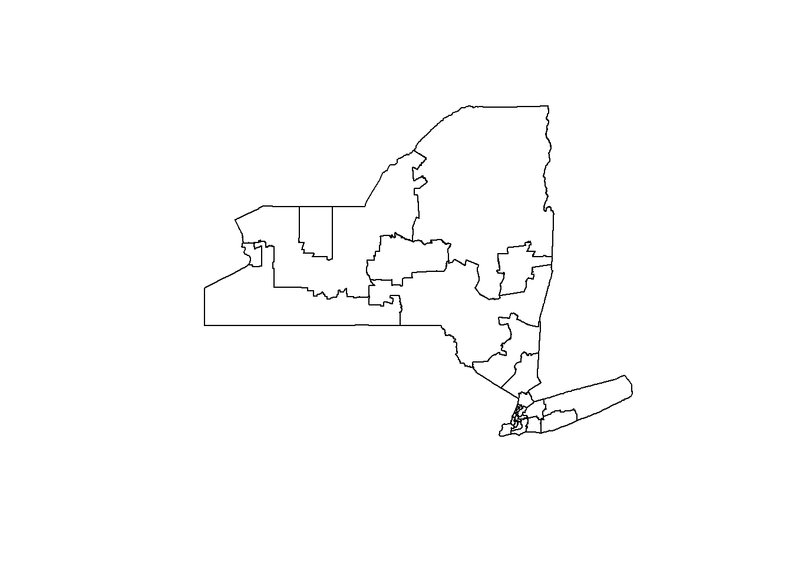
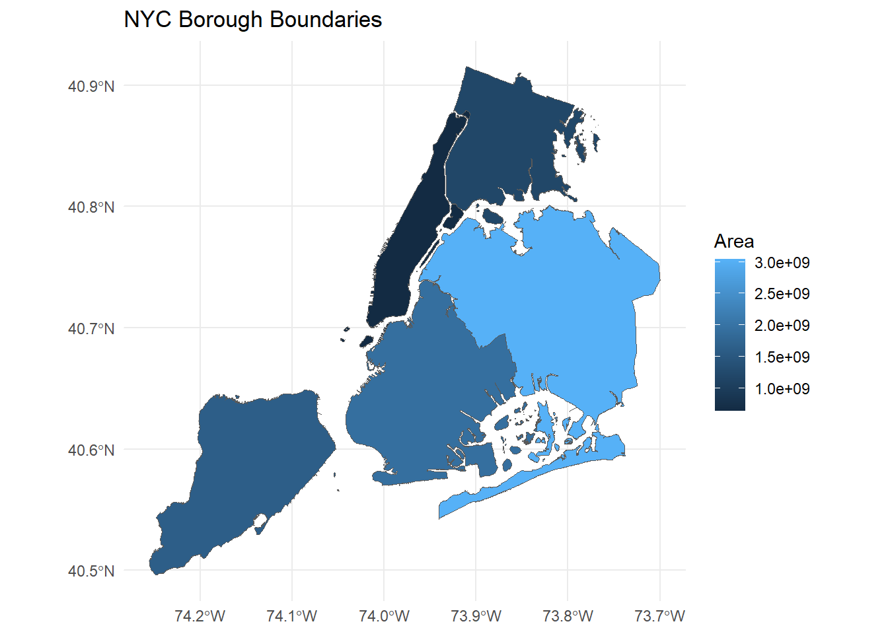

How does the county you live in and the income you make affect mortgage rates, particularly throughout the three stages of the COVID-19 pandemic (2018-2023)?
Specific Questions
Is there a county with more of a specific loan type than others? What could explain this?
What loan types were most popular pre, during, and post-pandemic?
Based on race and sex, who took out the most and least loans? Were specific loans dominant?
Is there a skew in the total number of loans given out depending on the county or geographic area?
Do interest rates vary significantly by county, and how are they influenced by sex or race?
NYC Annualized Sales (2003-2023)
Source: NYC Department of Finance
Description: Provides property sales data for NYC.
Record Mortgages Originated NY (2016-2021)
Source: NY State Department of Financial Services
Description: Contains records of mortgages originated in New York State.
HMDA US Mortgage Data (5 Years)
Source: Consumer Financial Protection Bureau
Description: Loan-level mortgage data, including interest rates, loan terms, and loan types.
S1901: Income in the Past 12 Months
Source: US Census Bureau
Description: Annual income data by household type and income brackets.
S2401: Occupation by Sex for the Civilian Employed Population 16 Years and Over
Source: US Census Bureau
Description: Employment statistics by occupation and demographics.
Project Goals
Examine the relationship between income, geographic location, and mortgage trends.
Study the impact of the COVID-19 pandemic on mortgage rates and types.
Team Members
Maria Jerez
Lauren Cardieri
Ayrat Aymetov
Folder Structure
/data: Contains raw and cleaned datasets.
/scripts: Includes code for data analysis and visualization.
/docs: Documentation related to the project.
Data downloading
New York shapefile
Downloading and opening New York shapefile
Code
# Define the URL of the ZIP file and the path for the local filezip_url <-"https://www.example.com/tl_2024_36_cd119.zip"# Replace with actual URLzip_file <-"data/tl_2024_36_cd119.zip"extract_dir <-"data/tl_2024_36_cd119"# Check if the ZIP file already existsif (!file.exists(zip_file)) {message("Downloading ZIP file...")download.file(zip_url, zip_file, mode ="wb")}# Check if the extracted folder exists; if not, unzip the fileif (!dir.exists(extract_dir)) {message("Unzipping the file...")unzip(zipfile = zip_file, exdir = extract_dir)} # Load the shapefile (adjust path as needed)shapefile_path <-file.path(extract_dir, "tl_2024_36_cd119.shp")shapefile <-st_read(shapefile_path, quiet =TRUE)# Plot the mapplot(st_geometry(shapefile))

Code
# Define file pathszip_file <-"data/nyc_borough_boundaries.zip"unzip_dir <-"data/nyc_borough_boundaries"# Download the NYC borough boundaries shapefile if not already downloadedif (!file.exists(zip_file)) {download.file("https://data.cityofnewyork.us/api/geospatial/tqmj-j8zm?method=export&format=Shapefile", destfile = zip_file, mode ="wb")}# Unzip the fileunzip(zip_file, exdir = unzip_dir)# Find the .shp file in the unzipped directoryshp_file <-list.files(unzip_dir, pattern ="\\.shp$", full.names =TRUE)# Load the shapefile using sfnyc_sf <-st_read(shp_file, quiet =TRUE)# Plot the shapefile using ggplot2ggplot(nyc_sf) +geom_sf(aes(fill = shape_area)) +labs(title ="NYC Borough Boundaries", fill ="Area") +theme_minimal()

NYC Annualized Sales (2003-2023)
Code
# Create the target directory if it does not existdir.create("data/NYC_Annualized_Sales", recursive =TRUE, showWarnings =FALSE)# Define the base URLbase_url <-"https://www.nyc.gov/assets/finance/downloads/pdf/rolling_sales/neighborhood_sales/"# Define the list of file names and relative paths (same strings used for both)files <-c("2023/2023_manhattan.xlsx","2023/2023_bronx.xlsx","2023/2023_brooklyn.xlsx","2023/2023_queens.xlsx","2023/2023_statenisland.xlsx","2023/2023_citywide_sale.xlsx","2022/2022_citywide_sale.xlsx","2021_citywide_sale.xlsx","2020_citywide_sale.xlsx","2019_citywide_sale.xlsx","2018_citywide_sale.xlsx")# Use purrr::walk for mappingwalk(files, ~ {# Destination file name (extracts the last part of the file path) dest_file <-file.path("data/NYC_Annualized_Sales", basename(.x))# Check if file existsif (!file.exists(dest_file)) {tryCatch({# Concatenate base URL with the relative pathdownload.file(paste0(base_url, .x), destfile = dest_file, mode ="wb")message("Downloaded: ", dest_file) }, error =function(e) {message("Failed to download: ", dest_file, " - ", e$message) }) } else {message("File already exists: ", dest_file) }})
Record Mortgages Originated NY (2016-2021)
Code
# URL of the webpageurl <-"https://www.dfs.ny.gov/apps_and_licensing/mortgage_companies/rrpm_originated_nys"# Define the output file pathoutput_file <-"data/mortgage_table.csv"# Check if the file already existsif (file.exists(output_file)) {# Load the existing CSV file into table_df table_df <-read.csv(output_file)} else {# Read the webpage content webpage <-read_html(url)# Extract the table (assumes the table is the first one on the page) table <- webpage %>%html_node("table") %>%# Select the table elementhtml_table()# Convert to a data frame table_df <-as.data.frame(table)# Save the table as a CSV filewrite.csv(table_df, output_file, row.names =FALSE)}# Use table_df for further processing or displaytable_df
# Base URLbase_url <-"https://ffiec.cfpb.gov/v2/data-browser-api/view/csv"# Define yearsyears <-2018:2023# Create the output folderdir.create("data/HMDA_NYC_Mortgage_2018_2023", recursive =TRUE, showWarnings =FALSE)# Loop through years to download state-level datafor (year in years) {# Construct the API URL with states only api_url <-paste0(base_url, "?years=", year, "&states=36")# Output file path output_file <-paste0("data/HMDA_NYC_Mortgage_2018_2023/mortgage_data_", year, "_state.csv")# Check if the file already existsif (!file.exists(output_file)) {# If the file doesn't exist, download ittryCatch({ response <-GET(api_url)# Check if the request is successfulif (status_code(response) ==200) {writeBin(content(response, "raw"), output_file)message("Downloaded: ", output_file) } else {message("Failed for year ", year, " - Status Code: ", status_code(response))message(content(response, as ="text")) } }, error =function(e) {message("Error downloading year ", year, " - ", e$message) }) }}
Code
# Define the file pathfile_path <-"data/HMDA_NYC_Mortgage_2018_2023/mortgage_data_2018_state.csv"# Read the CSV filemortgage_data <-fread(file_path)# Get a summary of the datacolnames(mortgage_data)